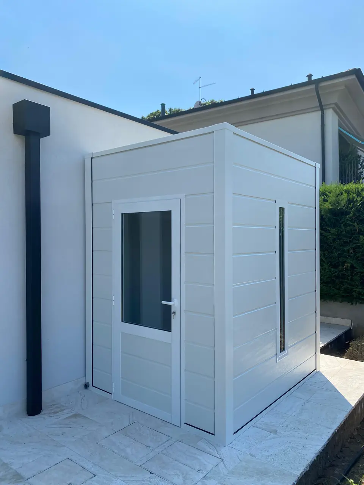
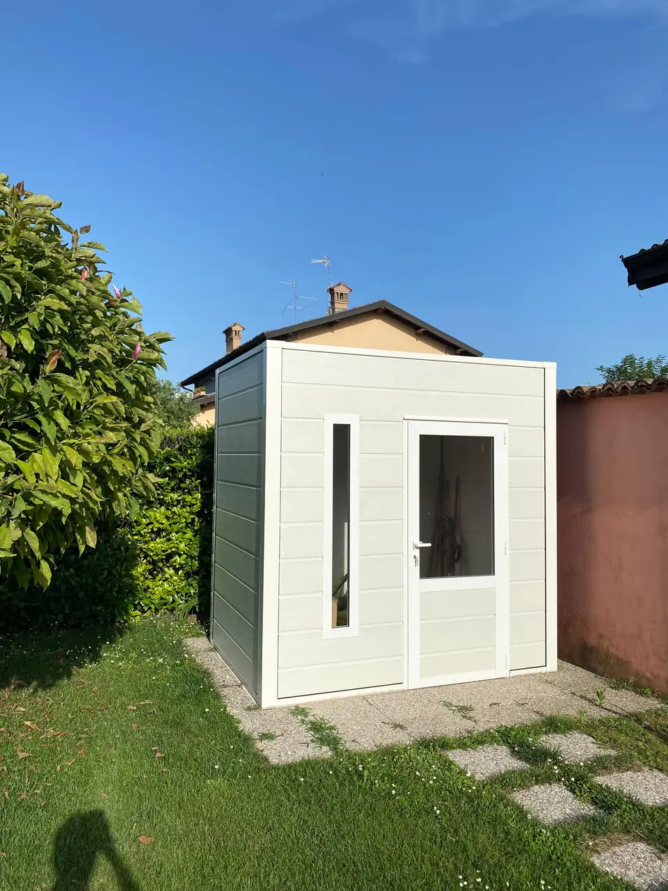
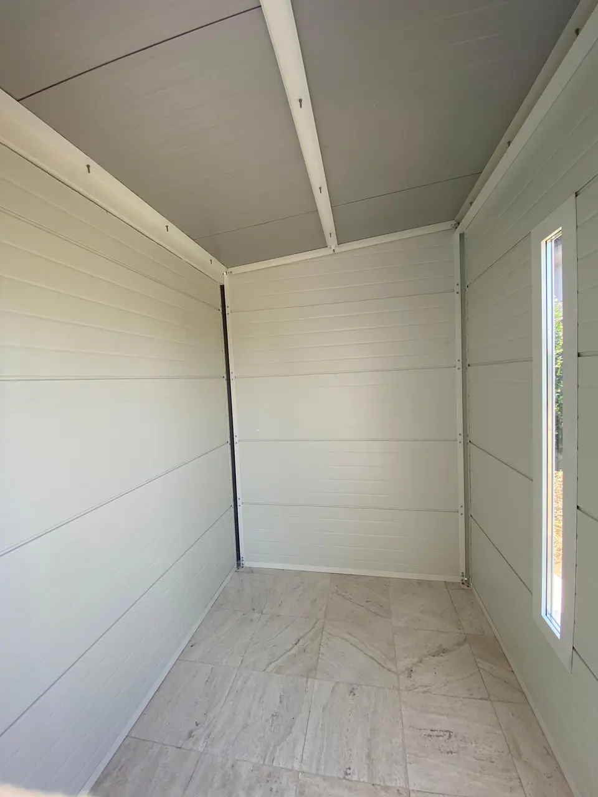
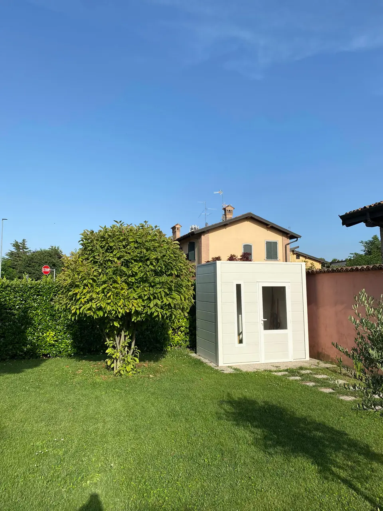

Galleria
Dentro e fuori
Bordo piscina, in giardino, sul patio di casa. Apri ogni foto per vederla a tutto schermo.
-

(apri ingrandimento)Sul patio -
(apri ingrandimento) Interno con porta -

(apri ingrandimento)In giardino, da vicino -

(apri ingrandimento)Interno completo -

(apri ingrandimento)In giardino, vista larga


Foto della casetta montata e immagine della brochure. Prova colori e finiture nel configuratore.